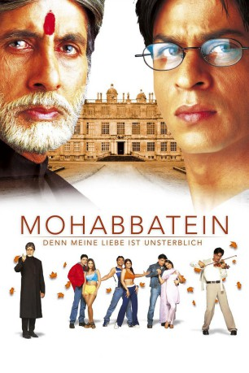

#584 Mohabbatein - Denn meine Liebe ist unsterblich
Alternativ: Liebesbeziehungen (Englischer Titel)
 
 IMDB-Wertung: 7.1 / 10
IMDB-Wertung: 7.1 / 10  Metascore: 0
Metascore: 0 
Indisches Liebesdrama von Aditya Chopra. An seiner Eliteschule setzt Direktor Narayan Sharikar (Amitabh Bachchan) seine Vorstellungen knallhart durch: Tradition, Ehre und Disziplin. Für die pubertierenden Schüler ist das nicht immer ganz einfach, vor allem wenn sie neu an der Schule sind wie Vicky, Sameer und Karan. Doch da ist ja noch der neue Musiklehrer, der sich dem Direktor widersetzt.
Jahr: 2000
Dauer: 216 Minuten
FSK: 6
Land: Indien Studio: Rapid Eye MoviesTonspuren:
Untertitel: Deutsch,
Auflösung: 720p (1280x544) Größe: 8488 MB
Genre: Musical, Drama, Liebe
Regisseur: Aditya Chopra
Drehbuch: Aditya Chopra, Aditya Chopra, Aditya Chopra, Aditya Chopra
Soundtrack: Jatin Pandit, Lalit Pandit
Darsteller:
 Amitabh Bachchan als Narayan Shankar
Amitabh Bachchan als Narayan Shankar Shah Rukh Khan als Raj Aryan Malhotra
Shah Rukh Khan als Raj Aryan Malhotra- Uday Chopra als Vicky
- Jimmy Shergill als Karan
- Aishwarya Rai Bachchan als Megha
 Anupam Kher als Kake
Anupam Kher als Kake- Saurabh Shukla als Sanjana's Father
- Amrish Puri als Maj. Gen. Khanna
- Meghna Patel als Ishika's friend
- Shamita Shetty als Ishika
- Jugal Hansraj als Sameer
- Kim Sharma als Sanjana
- Preeti Jhangiani als Kiran
- Archana Puran Singh als Preeto
- Helen als Miss Monica
- Shefali Shetty als Nandini
- Raman Lamba als Deepak
- Parzan Dastur als Ayush
- Ram Mohan als Khan Baba
- Geri Andrade als Sonia
- Rushad Rana als Gurukul Boy
- Mehul Nisar als Gurukul Boy
- Palash Dutta als Gurukul Boy
- Pearl Sukhadia als Ishika's friend
- Sindhu Tolani als Ishika's friend
- Sitaram als Shopkeeper
- Gurdial Sira als Narayan Shankar's Secretary
- Harpal Singh als Kake's friend
- Amith Rahman als Student , scenes deleted
 Kishore Bhatt als Student , uncredited
Kishore Bhatt als Student , uncredited- Priya Gill als (uncredited
- Jaswir Kaur als Dancer , uncredited
- Manjeet Kullar als (uncredited
- Navneet Nishan als (uncredited
- Himani Rawat als (uncredited
- Saima als (uncredited
- Samir Shah als Music Student , uncredited
Datei: X:\2000\Mohabbatein - Denn meine Liebe ist unsterblich (2000, FSK6, 1280x544).mkv seit 11.03.2015
Festplatte: HD 1996-2002
 Es gibt insgesamt 82 Filme in der Gruppe '2000'
Es gibt insgesamt 82 Filme in der Gruppe '2000'